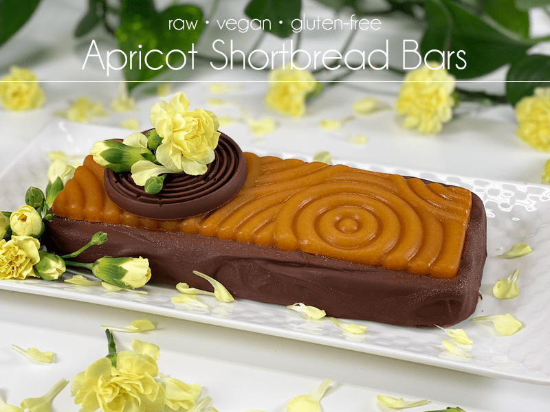
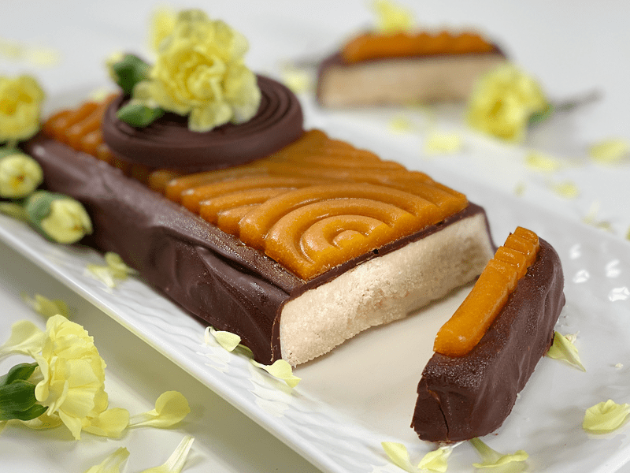

Apricot Shortbread Bars | Raw
With a few extra steps, you can turn the ordinary into the extraordinary! As the title reads… these Apricot Shortbread Bars are raw, vegan, and gluten-free. It takes only a handful of ingredients to create your own little masterpiece. If you live alone and make this dessert for yourself, go the extra step in making it beautiful… you DESERVE to surround yourself with beauty (and nutritious food!)

I enjoy making beautiful desserts for you all, but I LOVE making beautiful desserts for my sweet Bob! It’s my love language, and it’s important to me that I not only create nutrient-dense foods for him but to do them with pizazz! To see his eyes light up when I set a dish down before him… oh, how it makes my heart swoon.
These shortbread bars have an almond flavor profile with a very slight hint of coconut to them. They aren’t very sweet, which is why the chocolate coating rounds it all out very nicely. The apricot jelly (once molded) adds flair, along with the sweet tartness that is unique to apricots.

Shortbread, Chocolate, and Apricot Jelly Molds
When it comes to the shape, size, and decoration of this dessert… the only limit is your imagination! You can use the look I created as inspiration. I will list below the molds I used, except for the apricot mold (can’t find any more online).
- For the shortbread mold, I use my silicone bread pan, which you can see (here).
- For the chocolate spiral, I use (this) mold.
- For the apricot jelly mold… well shoot fire, I can’t find it online anymore. I have had this mold for years now, and when I went to grab a link for you all, it didn’t exist.
Ingredient Run-Down
- Almond Flour: I used a finely ground almond flour to achieve the shortbread texture. If you wanted to reduce the amount used, you could try using dried coconut that is ground down to a flour-like texture. Don’t use store-bought flour, as it will be too dry on the palate.
- Sweeteners: As you can see, I didn’t use a lot of sugar in this recipe. There are only 2 tablespoons of maple syrup in the whole recipe. To elevate and brighten the sweetness (without adding more sugar), I added some liquid stevia. It can be left out, but taste test the batter to see if it is sweet enough. Remember, though, it’s not meant to be sugary sweet.
- Almond Extract: I ask that you not omit this ingredient. The almond flavor that it imparts is needed to create that shortbread flavor.
- Apricot Jelly: Feel free to try other fruits if apricots are not available to you right now.
Well, there you have it in a nutshell. I hope you enjoy this recipe. Please let me know what you think down in the comment box. blessings, amie sue
 Ingredients
Ingredients
Shortbread
- 1 1/2 cup almond flour
- 3 Tbsp melted coconut oil
- 2 Tbsp maple syrup
- 1/2 tsp almond extract
- 1/4 tsp liquid stevia
- 1/4 tsp sea salt
Apricot Jelly Mold
- 1 cup (160 g) apricots, halved & seeds removed
- 1/4 cup water
- 3 Tbsp maple syrup
- 1 tsp agar powder
Chocolate Spirals and Coating
- Raw Chocolate (here) or melt vegan chocolate chips
Preparation
Shortbread
- Cover a rectangle baking dish, 9 inches x 5 inches, with parchment paper. Set aside.
- If you use a silicone pan, you won’t need to line it.
- In a medium bowl, combine the almond flour maple syrup, stevia, melted coconut oil, almond extract, and salt.
- Start with a spatula at first, then knead the dough with your hands. The dough is soft and wet at first, and becomes more dry as you go, making it easier to shape.
- Gather the dough into a ball and place it in the center of the prepared dish.
-
Press the ball with your fingers to evenly cover the bottom of the dish. You can smooth the top of the layer using a spatula or the back of a spoon.
-
Freeze for 10 minutes, while you are making the apricot jelly.
Apricot Jelly Mold
Option 1
- Combine the apricot, water, and maple syrup in the blender, processing to a creamy puree.
- Pour the puree mixture in a small saucepan, and bring the mixture to a boil. Whisk constantly until dissolved. Lower the heat and let simmer for 1 min.
- Pour the mixture into the mold and refrigerate until firm–about 4 hours.
Option 2 – more raw version
- Combine the apricot and maple syrup in the blender, processing to a creamy puree. Set aside
- Combine the water and agar powder in a small saucepan, and bring the mixture to a boil. Whisk constantly until dissolved. Lower the heat and let simmer for 1 min.
- Pour the mixture into the blender while it is running, so it quickly combines with the apricot puree.
- Pour the mixture into the mold and refrigerate until firm–about 4 hours.
Chocolate Spirals and Coating
- I provided a link above to raw hardening chocolate. You can use that, your own recipe, or you can melt vegan chocolate chips.
- You can use any decorative chocolate mold for the decorations, or you can skip that step.
- Remove the shortbread from the freezer and turn it out onto a cooling rack or parchment paper. Pour the melted chocolate over the bar, making sure to cover all sides. Allow it to firm up before decorating the top.
Decorating
- Place the chocolate-covered shortbread on a serving dish or cutting board (depends on your presentation).
- With a gentle hand, remove the apricot jelly from the mold and place it on top of the shortbread.
- Decorate as desired.
Storage
- If you make the apricot jelly, you will need to keep this dessert stored in the fridge due to it being more perishable. The apricot jelly starts to shift in color if it sits around too long, so enjoy this treat within a few days.
- The apricot jelly won’t melt at room temp if you want to put it out for an event.
- If you skip the apricot jelly, the bars can be stored in an airtight container on the counter for 2-3 days, in the fridge for 7 days, or in the freezer for several months.
- You can make the chocolate-covered shortbread up in advance and freeze it until needed. Then make the apricot jelly the day of the event.
© AmieSue.com